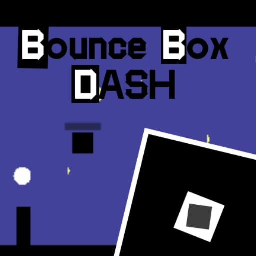

Zaid Asyrof
Game Developer • Music Composer • Student
Tentang Saya
Seorang mahasiswa yang memadukan logika sistem dengan estetika audio-visual. Berfokus pada pengembangan pengalaman digital yang imersif melalui Game Development dan Sound Design.
Keahlian
Godot Engine
Sangat BaikKemampuan pengembangan game tingkat lanjut. Berhasil menyelesaikan siklus pengembangan penuh hingga merilis game di Play Store.
Web Statis
Cukup BaikMampu membuat website statis yang responsif dan terstruktur dengan rapi.
Javascript
PemulaSedang mempelajari dasar pemrograman menggunakan Apache NetBeans.
Aransemen Musik (LMMS)
PemulaMampu meracik instrumen dan membuat aransemen musik digital (BGM) untuk berbagai kebutuhan menggunakan Linux Multimedia Studio.
Karya Digital
Proyek game yang telah dirilis dan sedang dikembangkan.

LIVE ON STOREBounce Box Dash
Game arcade minimalis yang mengandalkan ketangkasan. Telah diunduh dan aktif di platform Android.
Buka di Play StoreProyek Masa Depan
Sedang dalam tahap riset dan pengembangan konsep.
Galeri Suara
Aset & Publikasi
Temukan BGM, aset game, dan proyek eksperimental lainnya.
Perjalanan Akademis
Universitas Bhineka PGRI
Aktif mengeksplorasi metodologi pengajaran berbasis teknologi dan berkontribusi dalam UKM Master of Ceremony (MC).
SMA Negeri 1 Kauman
Melatih kepercayaan diri melalui seni peran di ekstrakurikuler Teater.